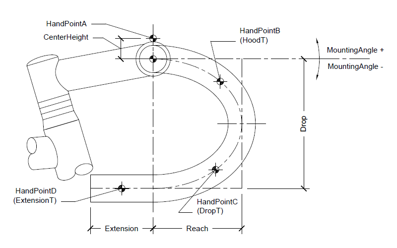
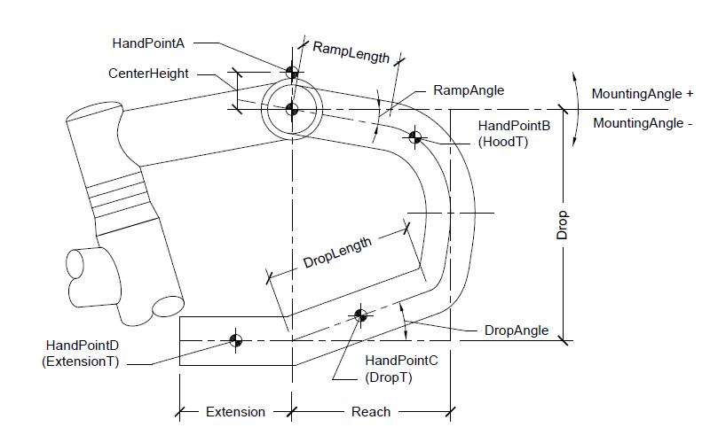

The drop bars are designed to emulate the hand positions of standard drop bars. They can be specified with a straight ramp for the top (hood) portion and with a straight grip section in the drops also. The handlebars use a simple curve if these straight sections are not used. The drop bars specify four hand points: A,B,C, and D. HandPointA is the center grip position at the stem. HandPointB is the typical hood position. HandPointC is the drop position. HandPointD is on the extension.
 This is mounting angle of the drop bar.
This is distance from the mounting point to the bar centerline at it's furthest reach.
This is distance from the mounting point to the bar centerline at it's lowest drop.
This is length of extension from the end of the bar. The extension is a straight section parallel to the ground when mounted at zero degrees.
This is angle of the ramp of the handlebar.
This is length of the ramp of the handlebar. The handlebar is curved to it's midpoint after the ramp.
This is angle of the straight grip section in the drop of the handlebar.
This is length of the straight grip section in the drop of the handlebar. The handlebar is curved to it's midpoint after this section.
This is height above the center of the bar for HandPointA.
This is a scale value that determines the placement of HandPointB on the hoods. A value of zero will place the hand at the begining of the bar and a value of one will put the point at the midpoint of the bar. If there is a ramp section, 0 to 0.5 will put the handpoint on the ramp, and 0.5 to 1.0 will put the handpoint in the curved portion.
This is a scale value that determines the placement of HandPointC in the drops. A value of zero will place the hand at the midpoint of the bar and a value of one will put the point at the end of the bar (before the extension). If there is a straight grip section, the handpoint is placed on this section according to the T value.
This is a scale value that determines the placement of HandPointD on the extension. A value of zero will place the hand at the begining of the extension and a value of one will put the point at the end of the extension.